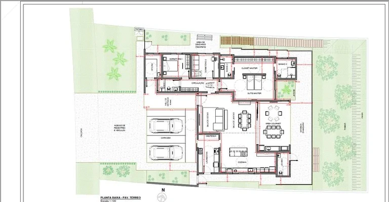
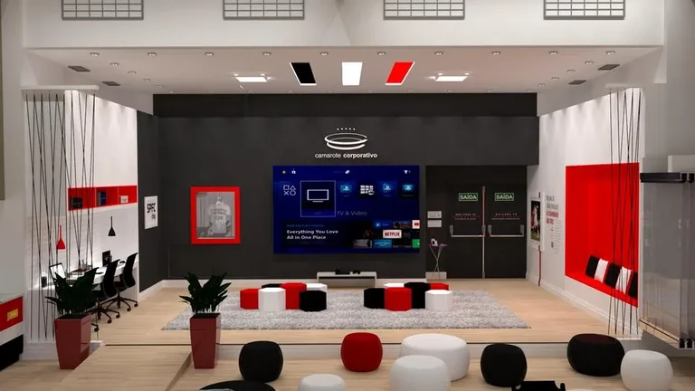
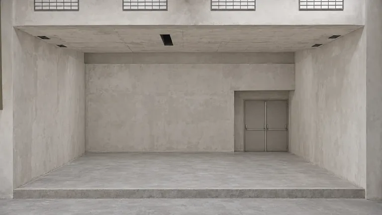

Falta tempo
O executivo fica para depois ou vai para o estagiário no meio da correria. Quando a obra começa, o detalhamento ainda não está pronto.
Você entrega o arquitetônico e segue com o seu cliente. Eu desenvolvo o detalhamento, cruzo as disciplinas e faço o 3D, para a obra não voltar com retrabalho.
Render: Amanda Tiziotto. Projeto: Fernanda Santoro e Amanda Tiziotto.
O arquitetônico está bonito e aprovado. O problema aparece quando a obra pede o que ainda não foi desenhado.
O executivo fica para depois ou vai para o estagiário no meio da correria. Quando a obra começa, o detalhamento ainda não está pronto.
Uma planta de layout não basta para o engenheiro, o marceneiro e o instalador. Sem cota, ponto e medida, a dúvida vira ligação para o escritório.
Pilar no caminho do esgoto, porta na frente da tomada, caixa d'água que não cabe. Sem compatibilização, o erro aparece com a obra andando.
Entra obra nova, entra cliente novo, e o executivo precisa de mais mãos sem aumentar a equipe do escritório.
É essa parte que eu assumo: pego o seu arquitetônico e devolvo o detalhamento que a obra consegue executar.
Você continua com o cliente e com a autoria do projeto. Eu assumo o detalhamento, em etapas, e você valida cada uma.
Estudo, planta ou projeto aprovado, na etapa em que estiver. A gente conversa sobre a obra, o padrão e o que você precisa.
Defino o escopo e o cronograma depois de ver o material, antes de começar.
Você recebe o desenvolvimento por partes e valida antes de avançar.
Cada alteração é revisada no conjunto das pranchas, para uma mudança de layout não deixar um ponto elétrico para trás.
E os prazos? Dependem do tamanho do projeto e da etapa em que ele está. Combino com você no início, depois de ver o material.
Contrate só o que o seu escritório precisa. O escopo é alinhado por projeto.
Plantas com todas as cotas, pontos de luz e tomadas, locação de pontos hidráulicos, detalhes de marcenaria e marmoraria, ar-condicionado, gesso e memorial descritivo. Cada disciplina em pranchas separadas, para o seu cliente orçar direto com cada fornecedor.
Cruzo o arquitetônico com os projetos estrutural, elétrico e hidráulico para achar as interferências antes da obra. Estrutura, elétrica e hidráulica seguem com os seus projetistas. Eu faço a conferência entre eles.
Modelagem e renders para o seu cliente enxergar o projeto e decidir antes da obra. Trabalhos meus e em parceria, com a participação de cada profissional identificada.
Na prática: numa obra de um escritório onde trabalhei, foi um detalhamento com cotas que mostrou uma ferragem errada antes de a estrutura seguir. Sem ele, o pé-direito sairia errado.
Amostra técnica
Layout, pontos elétricos e cotas de um caderno executivo, e o render do mesmo projeto. Os dados privados dos carimbos ficaram fora dos recortes.
Cada disciplina em sua prancha, com as medidas que quem está na obra precisa ler.
Ver mais trabalhos
Trabalho em destaque
Um dos trabalhos do meu portfólio, no estádio do Morumbi. Veja o camarote, o auditório e as áreas de apoio em imagens 3D.
Arraste a divisão para visualizar os acabamentos e a composição do projeto.


Arraste para comparar. No teclado, use as setas.
Comparação ilustrativa: o antes foi criado por IA a partir do render e não é um registro do espaço antes da obra. O depois é a visualização 3D do projeto, de Amanda Tiziotto.
Executivos, imagens 3D e outros trabalhos. Abra as imagens para ver de perto.
Projeto: Fernanda Santoro e Amanda Tiziotto. AutoCAD: Amanda Tiziotto.
Projeto: Fernanda Santoro e Amanda Tiziotto. AutoCAD: Amanda Tiziotto.
Projeto: Fernanda Santoro e Amanda Tiziotto. AutoCAD: Amanda Tiziotto.
Projeto: Fernanda Santoro e Amanda Tiziotto. Render: Amanda Tiziotto.
Projeto: Fernanda Santoro e Amanda Tiziotto. Render: Amanda Tiziotto.
Projeto: Fernanda Santoro, Vitória Estrioli e Amanda Tiziotto. Render: Amanda Tiziotto.
Camarote corporativo no estádio Morumbi, SPFC. Visualização 3D: Amanda Tiziotto.
Projeto autoral: Amanda Tiziotto.
Projeto autoral: Amanda Tiziotto.
9 trabalhos na seleção.

Sou Amanda Tiziotto, arquiteta e urbanista formada pela Universidade Metodista de Piracicaba. Passei por escritórios de arquitetura, com projetos executivos e de aprovação, interiores e maquetes eletrônicas. Hoje meu foco é o executivo, o detalhamento e a compatibilização.
Costumo trabalhar com arquitetas de obra: elas desenvolvem o estudo inicial e me passam o executivo. O contato e o desenvolvimento são feitos diretamente comigo.
Também atendo projetos de interiores para casa, em geral por indicação. Conheça a página de interiores.
Pode. Executivo, compatibilização e 3D podem ser contratados separados. Na conversa inicial, a gente define o que faz sentido para o seu projeto.
O arquitetônico é do escritório que o criou. Eu entro no desenvolvimento do executivo e do 3D, e a participação de cada profissional fica identificada, como nos exemplos do portfólio.
Não. Faço o executivo de arquitetura e de interiores, a locação dos pontos e a compatibilização entre as disciplinas. Os projetos complementares seguem com os seus projetistas.
Depende do tamanho do projeto e da etapa em que ele está. Eu combino o cronograma com você no início, depois de ver o material.
O desenvolvimento chega por etapas, para validação. Cada alteração é revisada considerando os desenhos relacionados, para manter as informações coerentes entre si.
Chame no WhatsApp e conte o tipo de obra, a etapa do projeto e o prazo que você tem em mente. Escopo, cronograma e condições vêm na proposta.
Executivo, compatibilização ou 3D: me diga o que o seu escritório precisa e o prazo que você tem em mente.
Chamar a Amanda no WhatsApp(19) 98176-7271